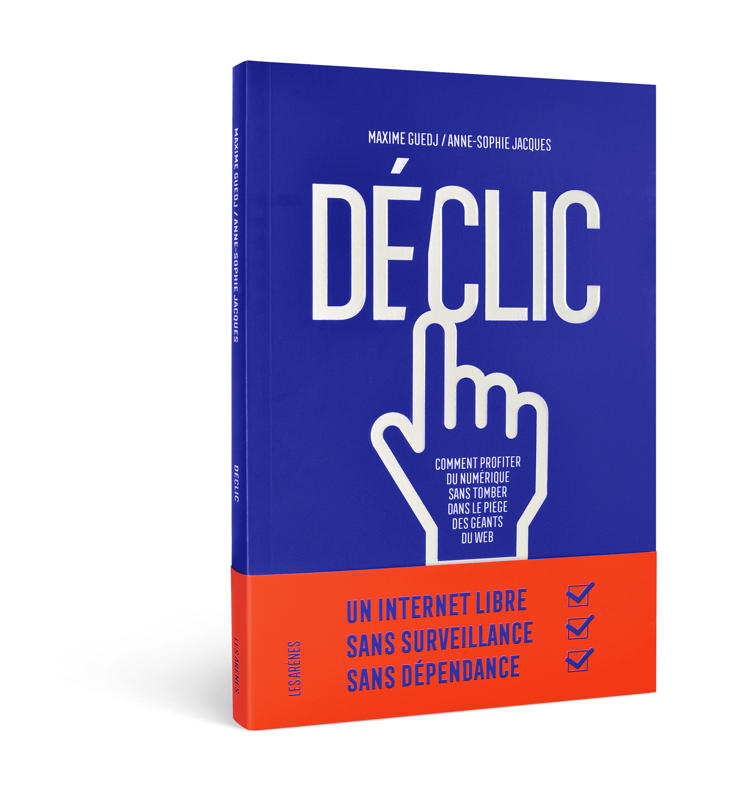
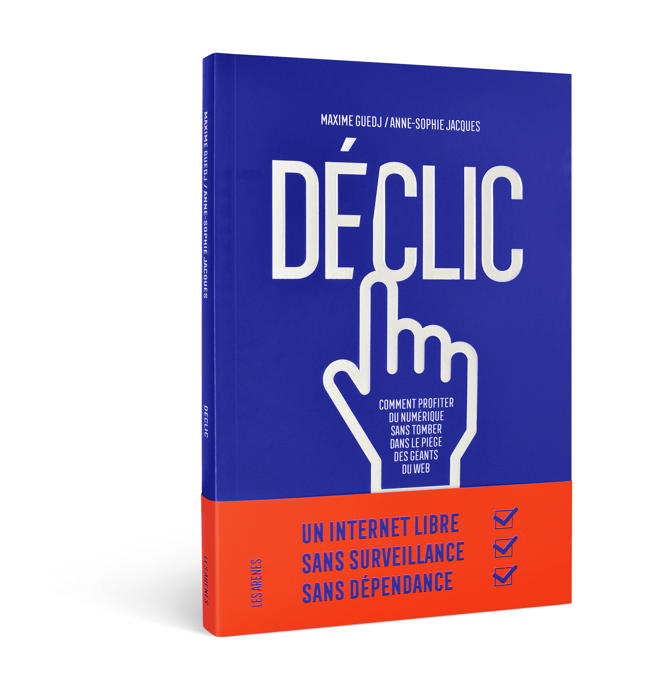

Exploitation des données privées, surveillance généralisée, addiction au smartphone, disparition de pans entiers de l'économie... Les critiques du monde du numérique ne cessent de s'amplifier ; difficile d'ignorer les conséquences de l'utilisation d'Amazon, Facebook, Google, Instagram ou Netflix.
Et s'il existait un autre Internet, respectueux de nos libertés ?
 
{kind=link}
{kind=link}
Déclic
Maxime Guedj & Anne-Sophie Jacques - Les Arènes
L'ancien start-uper Maxime Guedj et la journaliste Anne-Sophie Jacques proposent de s'engager sur une nouvelle voie. Ils expliquent de l'intérieur comment l'utopie des débuts a engendré des entreprises tentaculaires. Ils sont allés à la rencontre de celles et ceux qui (re)font d'Internet un bien commun, un outil d'émancipation et de liberté : logiciels libres, design éthique, protection de la vie privée, information décentralisée...
Véritable manuel d'autodéfense du citoyen connecté, Déclic contient des fiches pratiques proposant des solutions pour ralentir, pour échanger, s'informer et agir autrement.
Un autre Internet existe déjà : libre à nous de le découvrir.
Où se le procurer ?
Chez votre libraire ou sur l'un de ces sites:
Et en ebook ?
Une version numérique sous licence équitable et sans DRM est disponible sur:
Infos
Paru le 26 février 2020
Prix : 19€ papier / 13,99€ ebook
Pages : 240
Format papier : 140x210 - couverture souple
ISBN : 78-2-7112-0197-6
Feuilleter un extrait
Télécharger le pdfVu, lu, entendu
France Inter - TV5 Monde - WeDemain - La Télé Libre - BFM Business - Imagine - France Info - Alternatives Economiques - Maintenant, Vous Savez - Mr. Mondialisation - France Inter - Yggdrasil - Institut Français - Arte RadioMaxime Guedj est auteur, ingénieur et entrepreneur. En 2009, il crée la page facebook Je Ne Peux Pas Vivre Sans Musique qui rassemble 1,7 millions de fans, puis le site de rencontres musicales TecoutesQuoi et le collectif artistique MailTape. Il devient chef de produit chez Deezer en 2015 puis directeur de la stratégie numérique pour le magazine Ebdo en 2018. Aujourd'hui consultant indépendant, il aide des entreprises et associations engagées à se développer.
Anne-Sophie Jacques est autrice et journaliste. Elle a travaillé pendant dix ans pour le site Arrêt sur images et a publié en 2012 La Crise et moi. Petit manuel de survie au matraquage médiatico-économique. Elle a collaboré en 2018 au journal Ebdo en tant que rédactrice en chef adjointe chargée des relations avec les lecteurs. Aujourd'hui, elle est journaliste indépendante.
Le code de ce site est publié sous licence libre AGPL3 - Conçu par PCFH Studio — Hébergé par IndieHosters, membre des CHATONS.